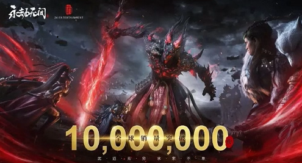
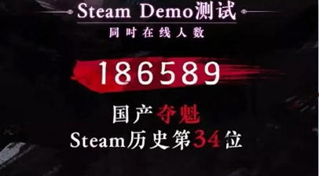

今天凌晨，《永劫无间》官方突然宣布达成了“全球销量破1000万份”成就
发布时间：2022年11月02日 14:24
让人不得不感叹的是，《永劫》距上次宣布破600万销量仅仅过了7个月，便再次刷新了国产买断制游戏的记录。
这也意味着，作为一人一份的买断制游戏，《永劫》具有持续扩大目标用户群体的能力，而这与它自身的品质、稳定优化更新的运营以及海外的宣传推广息息相关。


从1月20日放出消息后，短短3天，TapTap上预约人数就破了50万，目前预约数逼近200万。在5月20日网易发布会上也放出了一部分实机画面，
官方说大部分游戏内容都已经开发完成并进入了调优阶段，预计手游与玩家见面的时间应该不远了。
游戏内容上，《永劫》几乎保持着三个月更新一个赛季，每两周进行一次小更新的速度
每次新赛季都会推出一名新英雄，比如S2赛季推出了无尘，S3赛季推出了顾清寒，S4赛季推出了武田信忠，目前游戏里已经有12名英雄。